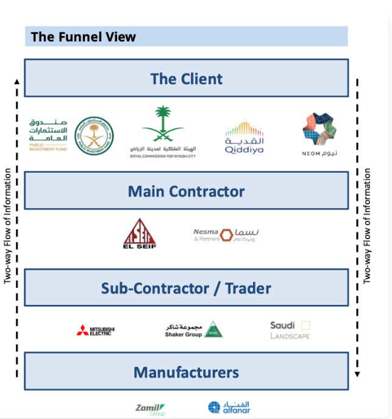

<div class="bg-[#fff] pt-10 pb-8">
  <div class="container mx-auto px-3">
    <div
      class="flex flex-col-reverse justify-center lg:flex-row lg:justify-between items-center gap-6 lg:gap-8 mb-6 lg:mb-8"
    >
      <div class="w-[95%] lg:w-[50%]">
        <h2 class="text-[#1E3B8A] mb-4 flex items-center gap-2 sm:gap-4">
          <div
            class="w-11 h-11 sm:w-14 sm:h-14 rounded-full bg-[#1E3B8A] flex items-center justify-center"
          >
            <i
              class="fa-solid fa-arrow-right text-[#fff] text-[18px] sm:text-[22px]"
            ></i>
            <!-- <div
              class="w-4 h-4 sm:w-6 sm:h-6 bg-white rotate-[15deg] rounded-[3px]"
            ></div> -->
          </div>

          <span
            class="bg-[#f5fbfe] py-2 px-6 sm:px-8 rounded-full text-[22px] min-[310px]:!text-[24px] sm:text-[28px] md:text-[32px] lg:text-[32px] xl:text-[38px] font-[700]"
            >The Funnel View</span
          >
        </h2>

        <h3
          class="text-[#1E3B8A] text-[26px] sm:text-[35px] lg:text-[40px] xl:text-[48px] xl:pr-6 font-[700] leading-[1.1] mb-3 xl:w-[90%]"
        >
          EMDAD delivers a comprehensive view of all supply chain stakeholders,
          allowing users to effortlessly analyse financial metrics and relevant
          data with a single click..
        </h3>
      </div>

      <div
        class="w-[95%] lg:w-[50%] rounded-lg flex justify-center lg:justify-end"
      >
        
      </div>
    </div>
  </div>
</div>

<div class="h-6"></div>
